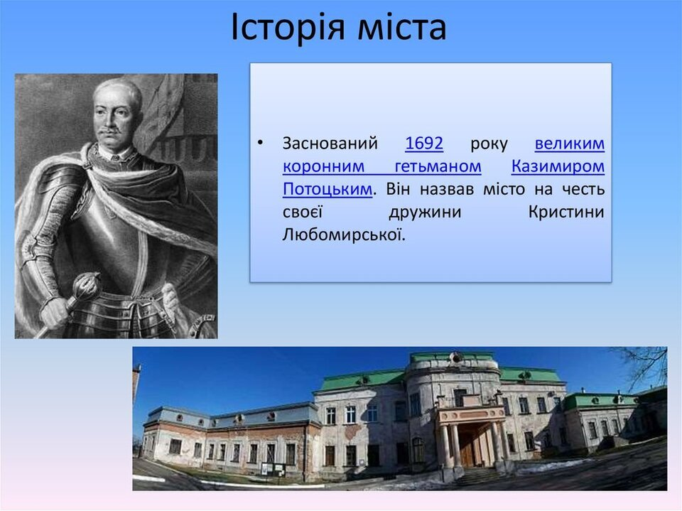
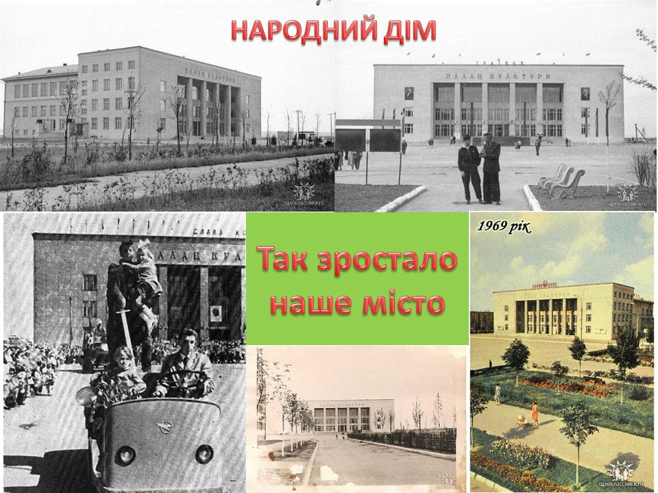
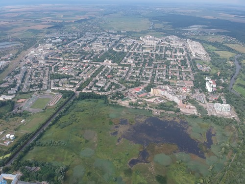
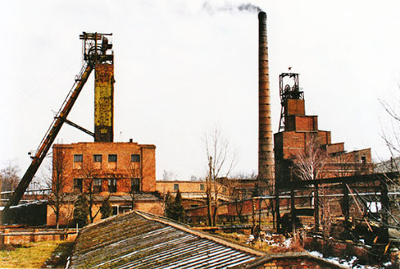
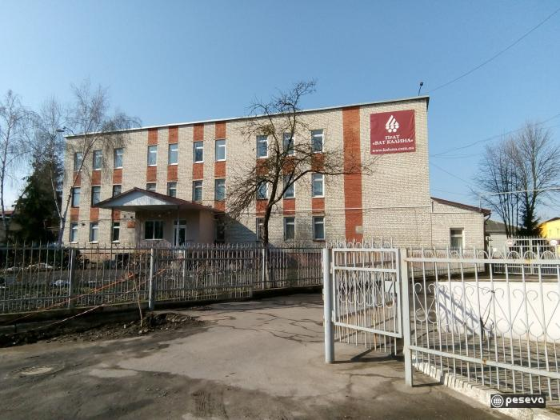
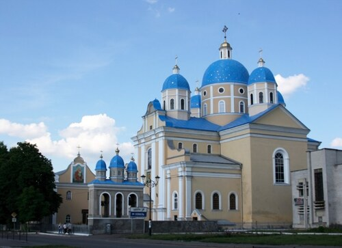
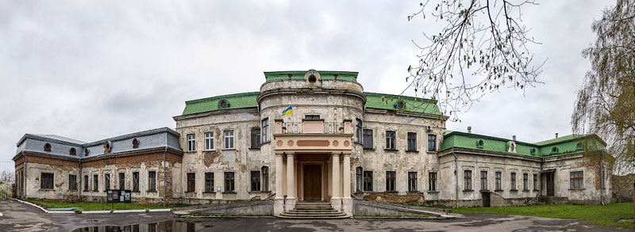
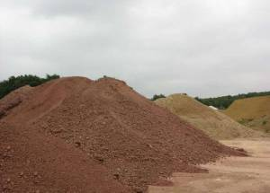

Про місто
Історія


Заснований 1692 року великим коронним гетьманом Феліксом Казимиром Потоцьким (похований 15 травня 1702 в Кристинополі в костелі бернардинів, який сам фундував в 1695; перевіз сюди з Риму мощі св. Климента). Він назвав місто на честь своєї дружини Кристини Любомирської.
Його син, белзький староста Юзеф (Йосип) Потоцький був похований там само у 1723. Внук його — воєвода руський Францішек Салезій Потоцький (1700—1772) побудував палац і заснував (1768) монастир Василіян (барокова церква св. Юра (побудовані у 1771–1776); до 1946 — відпустове місце УГКЦ з чудотворною іконою Матері Божої)[2]. Францішек Потоцький тримав в Кристинополі постійний козацький полк (300 осіб.)
В 1760-х роках в кристинопільському палаці Потоцьких побував Джакомо Казанова.
Син Францішка Салезія Потоцького, Станіслав Щесний Потоцький, після трагедії з Ґертрудою Коморовською, переніс родинну «столицю» Потоцьких з Кристинополя до Тульчина (1774).
Після першого поділу Речі Посполитої (1772) Кристинопіль разом з усією Галичиною відійшов до володінь Габсбурґів.
Відомо, що до середини XIX століття місто мало чотирьох власників (господарів).
Після заняття військами ІІ Речі Посполитої (1919) містечко Кристинополь належало до Польщі, було центром ґміни Сокальського повіту.
Сучасний Червоноград охоплює територію не лише Кристинополя, про який так часто згадують, а й Клюсова та найдавнішого за історією - Нового Двору. Як відомо, 2015 році: Червонограду - 64 роки,
Новому Двору - 402,
Кристинополю - 323
Клюсову - 265 років .
Відтак, кожен із цих населених пунктів має свою історію. Відповідно, різним був і демографічний склад. Дані з двох різних джерел свідчать про те, що Кристинопіль не був містом українців.
У групі "Кристинопіль-259. Декомунізація" в одній із соціальних мереж оприлюднено дані перепису населення 1880 року. Згідно з ними, тоді, наприкінці ХІХ століття, у Кристинополі мешкало 3519 осіб, з них:
2748 євреїв,
404 поляки,
364 українці
та 3 німця.
Незмінним залишалось етнічне співвідношення населення Кристинополя і, щонайменше, до кінця 30х років ХХ століття. Це видно із унікальної етнографічної карти Південнозахідної України (Галичини), складеної у 1939 році.
15 лютого 1951 містечко передано СРСР на підставі радянсько-польської міжурядової угоди. Взамін Польща отримала 3 червня 1951 року Устрики Долішні (пол. Ustrzyki Dolne) з районом (пол. Bieszczady).
Основою, на якій почав розвиватися радянський Червоноград, стали розвідані поклади кам'яного вугілля. У 1950 почалося будівництво шахт.
З 30.12.1962 Червоноград (з селищами міського типу Гірник, Жвирка, Соснівка) — місто обласного підпорядкування Львівської області.[3]
1990 року в Червонограді вперше в УРСР демонтовано пам'ятник Леніну — на кілька місяців раніше, ніж у Львові[4]. Ще в 1988 році тут було створено осередок Товариства рідної мови ім. Тараса Шевченка, а в 1989 — Народного руху України.
Під час кризи у 90-их в Червонограді збанкрутували і закрились більшість підприємств.
Географія

Кристинопіль розташований на Поліській рівнині, в Надбужанській котловині, в місці впадання в Західний Буг його приток — Солокії і Рати, в північній частині Львівської області. Місто Червоноград знаходиться в Західноукраїнській лісостеповій зоні (Мале Полісся).
Площа території — 2 097 га (Червоноград − 1779 га, місто Соснівка — 198 га, смт Гірник — 120 га). Червоноград має зручне географічне розташування і добре розвинену транспортну мережу (автотраса Львів — Ковель — Брест, шосе Белз — Червоноград та Радехів — Червоноград, залізниці Львів — Ковель та Червоноград — Рава-Руська), межує з Польщею. Сучасний Червоноград розділений заплавою Західного Бугу на старе місто (у минулому — Кристинопіль) і нове місто (побудований у зв'язку з розвитком вугільного басейну), які з'єднуються дамбою. Відстань до Львова — 73 км, до Сокаля — 9 км.
Економіка


З 1951 року місто стало одним із центрів новопосталого Львівсько-Волинського кам'яновугільного басейну. Питома вага окремих галузей у галузевій структурі промислового виробництва у звітному році відповідно становила:
добувна промисловість — 68,9 %
легка — 12,8 %
харчова — 2,3 %
машинобудівна — 2,4 %
виробництво та розподіл електроенергії, газу, води — 9,5 %
металургія та оброблення металу — 3 %
поліграфія — 0,2 %
інші — 0,9 %
У Червонограді діє понад 4 тис. суб'єктів господарської діяльності — юридичних та фізичних осіб, в тому числі 350 малих підприємств. У регіоні працює готельний комплекс, 7 АЗС, які відповідають європейським стандартам, СТО з автомийкою. У місті є 8 автостоянок, 275 магазинів, 66 торговельних павільйонів і кіосків, 114 підприємств ресторанного господарства з кількістю клієнтських місць — 5,6 тисячі.
Пам’ятки архітектури


Колишній бернардинський костел Зіслання св. Духа[10] (1692—1704). Зараз церква Святого Володимира.
Святоюрський монастир оо. Василіян. Церква і монастир були зведені по проекту архітектора Івана Зельнера. В 1892 в монастирі складав обіти майбутній митрополит А. Шептицький. Монастир славився своєю чудотворною іконою, яку подарував Францішку-Салезію робчинський староста Станіслав Садовський (1765). В 1946 цю ікону вивезли до Варшави. Повернули святиню Україні 7 квітня 1994 року.
Кристинопольський палац.
У 1756–1760 (за іншими даними 1756–1762) Францішек Салезій Потоцький (внук Фелікса Казимира Потоцького) перебудував Кристинопольський замок, який раніше стояв на цьому місці, у палац французького стилю та заклав палацовий садово-парковий ансамбль. Парк і палац був запроектований П'єром Ріко де Тіррґаєм (П'єр Ріко де Тіррґай). Палацом з кінця XVIII ст. володіла Катажина Коссаківська. Після її смерті маєток ще кілька разів змінював господарів. Нині палац залишається в жалюгідному стані.
Зараз у приміщенні — Червоноградська філія Львівського музею історії релігії. У музеї є 4246 одиниць основного і 3152 одиниці науково-допоміжного фондів. Три експонати червоноградського музею внесено до п'ятитомного видання «Історія української культури».
Весною 1992 року у місті — вперше в Україні — було встановлено пам'ятник українському історику та державному діячу Михайлу Грушевському.[11]
Корисні Копалини

Червоноградський гірничо промисловий район розташований на півночі Львівської області в межах південної частини Волинської височини, на півдні в межах улоговини річок Західний Буг і Стир. Кордон між ними проходить по долині річки Солокія. Основні природні ресурси регіону: Забузьке і Межирічанське (розроблені) і Тяглівське та Люблінське (розвідані) родовища кам'яного вугілля. У порівнянні з Донбасом, загальні показники якості вугілля нижчі, воно характеризується меншою теплотворністю і більш високою зольністю. Значну частину вугілля використовують Добротвірська ТЕС (Львівська область) і Бурштинська ТЕС (Івано-Франківська область).
Відносна одноманітність осадових порід, що виходять на поверхню, зумовило наявність тільки деяких видів будівельних матеріалів, до яких відносяться карбонатні породи (крейда і мергель), будівельні та бетонні піски, цегляні суглинки і глина, природні кам'яні будівельні матеріали і керамзитова сировина. Мергель як цементна сировина залягає в досить великих кількостях, але на даний момент не розробляється. Основною сировиною цегельного виробництва є четвертинні лесовидні суглинки, які утворюють суцільний покрив на розмитій поверхні крейди. Суглинки розміщені в широкій смузі, перетинає площа басейну з півночі на південь. На площі Червоноградського району родовище суглинків знаходиться біля Сокаля. Поширені торф'яні відкладення в заболочених долинах річки Західний Буг та її приток.